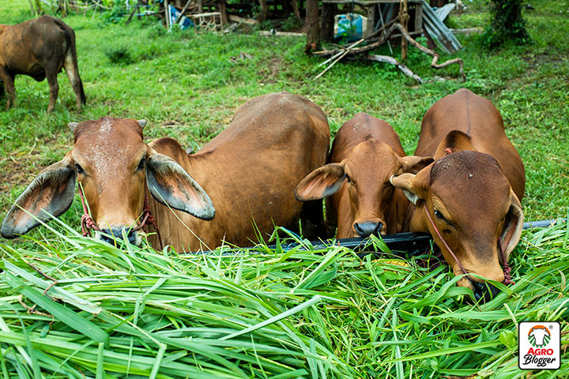
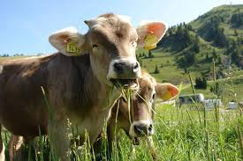

el mundo de la ganadería
alimentación
Ganado Bovino
(vacunos) .Las más importantes son la cebada, la avena, la alfalfa, el trébol, la festuca, el raigrás, el sorgo, .
Los concentrados, en cambio, son las partes de alta energía ricas en almidón los frutos, tubérculos y semillasaqui se escribe el contenido Forraje: Pasto fresco es la base de su dieta. Asegúrate de que sea de buena calidad y variado.
Heno: Puede complementar la alimentación en invierno o en épocas de escasez de pasto Concentrados: Granos como maíz y avena, así como suplementos proteicos, son útiles para mejorar la nutrición, especialmente en vacas lecheras. Minerales y vitaminas: Proporciona un suplemento mineral adecuado, especialmente calcio y fósforo, y vitaminas A, D y E
. Ganado Porcino Raciones balanceadas: Una mezcla de maíz, harina de soya y otros ingredientes que aseguren un buen balance de proteínas y energía.
Suplementos: Agrega minerales y vitaminas específicos según la etapa de crecimiento .
 Agua: Deben tener acceso constante a agua fresca .
Agua: Deben tener acceso constante a agua fresca . Ganado Ovino (ovejas) Pasto y forraje: Al igual que en bovinos, el pasto de buena calidad es esencial. Heno: Especialmente durante el invierno.
Concentrados: Granos como cebada o maíz, especialmente para ovejas en lactancia o en preparación para la reproducción .
Minerales: Suplementos de minerales, especialmente cobre y sal.

La alimentación adecuada es esencial para un crecimiento saludable y una buena producción de carne o leche.
Los componentes básicos de su dieta incluyen: -
Forrajes
: La alfalfa, el trébol y los pastos son fuentes principales de nutrientes.Se recomiendan forrajes frescos o ensilados.
-
Concentrados
: Son necesarios para aumentar la energía y las proteínas en la dieta.Estos incluyen cereales como el maíz y la soja.
-